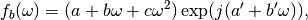
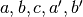
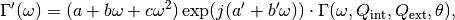

S11fit – Resonance fitting routines and utilities¶
Module for fitting resonance line shapes to different circuit models
This module contains the functions necessary to fit some general Lorentzian to simulations or measurements. The main function is “fit” and is imported with stlab as “stlab.S11fit”. All other functions in this module are there to supplement this fitting function or are not generally used.
-
stlab.utils.S11fit.S11full(frec, params, ftype='A')[source]¶ Function for total response from background model and resonator response
-
stlab.utils.S11fit.S11theo(frec, params, ftype='A')[source]¶ Theoretical response functions of cavities with no background
Returns the theory values of cavity response functions for a given set of parameters for different cavity models.
Parameters: - frec (float or array_like of float) – Frequency values to calculate the response function at
- params (lmfit.Parameters) – Parameter values for calculation
- ftype ({'A','-A','B','-B','X'}, optional) –
Model for response function selection. These are described in Daniel’s response function document. The desired model should be found there and selected with this parameter.
The possible models are (CHECK DANIEL’S RESPONSE FUNCTION DOCUMENT):
- ‘A’: Reflection cavity with short circuit boundary condition at input port (default selection)
- ‘-A’: Reflection cavity with open circuit boundary condition at input port (= model A with a minus sign)
- ‘B’: Transmission through a side coupled geometry
- ‘-B’: Same as model B but with a minux sign
- ‘X’: Non-standard model (used in a magnetic field sweep)
Returns: Values of theoretical response function at frequencies given in frec
Return type: numpy.complex128 or numpy.ndarray of numpy.complex128
-
stlab.utils.S11fit.backmodel(x, params)[source]¶ Function for background model.
Returns the background model values for a given set of parameters and frequency values. Uses parameter object from lmfit. The background model is given by

where  are real parameters.
Parameters: - x (float or array_like of float) – Frequency values to evaluate the model at
- params (lmfit.Parameters) – Parameters set with which to generate the background
Returns: Background values at frequencies x with model parameters params
Return type: numpy.complex128 or numpy.ndarray of numpy.complex128
-
stlab.utils.S11fit.fit(frec, S11, ftype='A', fitbackground=True, trimwidth=5.0, doplots=False, margin=51, oldpars=None, refitback=True, reusefitpars=False, fitwidth=None)[source]¶ MAIN FIT ROUTINE
Fits complex data S11 vs frecuency to one of 4 models adjusting for a multiplicative complex background It fits the data in three steps. Firstly it fits the background signal removing a certain window around the detected peak position. Then it fits the model times the background to the full data set keeping the background parameters fixed at the fitted values. Finally it refits all background and model parameters once more starting from the previously fitted values. The fit model is:

Parameters: - frec (array_like) – Array of X values (typically frequency)
- S11 (array_like) – Complex array of Z values (typically S11 data)
- ftype ({'A','B','-A','-B', 'X'}, optional) – Fit model function (A,B,-A,-B, see S11theo for formulas)
- fitbackground (bool, optional) – If “True” will attempt to fit and remove background. If “False”, will use a constant background equal to 1 and fit only model function to data.
- trimwidth (float, optional) – Number of linewidths around resonance (estimated pre-fit) to remove for background only fit.
- doplots (bool, optional) – If “True”, shows debugging and intermediate plots
- margin (float, optional) – Smoothing window to apply to signal for initial guess procedures (the fit uses unsmoothed data)
- oldpars (lmfit.Parameters, optional) – Parameter data from previous fit (expects lmfit Parameter object). Used when “refitback” is “False” or “reusefitpars” is “True”.
- refitback (bool, optional) – If set to False, does not fit the background but uses parameters provided in “oldpars”. If set to “True”, fits background normally
- reusefitpars (bool, optional) – If set to True, uses parameters provided in “oldpars” as initial guess for fit parameters in main model fit (ignored by background fit)
- fitwidth (float, optional) – If set to a numerical value, will trim the signal to a certain number of widths around the resonance for all the fit
Returns: - params (lmfit.Parameters) – Fitted parameter values
- freq (numpy.ndarray) – Array of frequency values within the fitted range
- S11 (numpy.ndarray) – Array of complex signal values within the fitted range
- finalresult (lmfit.MinimizerResult) – The full minimizer result object (see lmfit documentation for details)
-
stlab.utils.S11fit.getwidth_phase(i0, vec, margin)[source]¶ Finds indices for peak width around given maximum position
Auxiliary function for fit. Given the complex array “vec” assuming “i0” is the resonance index, this function finds resonance peak width from the phase derivative of the signal.
Parameters: Returns: Indices of the lower and upper estimated edges of the resonance peak
Return type:
-
stlab.utils.S11fit.newparams(f0=1, Qint=100, Qext=200, theta=0, a=1, b=0, c=0, ap=0, bp=0)[source]¶ Makes new Parameters object compatible with fitting routine
A new lmfit.Parameters object is created using the given values. Default values are filled in for ommited parameters. The fit model is:
Parameters: - f0 (float, optional) – Resonance frequency
- Qint (float, optional) – Internal quality factor
- Qext (float, optional) – External quality factor
- theta (float, optional) – Rotation angle to compensate additive background effects. Should be close to 0 for good fits.
- a (float, optional) – Background magnitude offset
- b (float, optional) – Background magnitude linear slope
- c (float, optional) – Background magnitude quadratic term
- ap (float, optional) – Background phase offset
- bp (float, optional) – Background phase slope
Returns: params – lmfit fit object containing the provided parameters
Return type: lmfit.Parameters
-
stlab.utils.S11fit.phaseunwrap(array)[source]¶ Removes a global phase slope from a complex array
Unwraps the phase of a sequence of complex numbers and subtracts the average slope of the phase (desloped phase).
Parameters: array (array_like of complex) – 1-D array of complex numbers Returns: Same array as original but with phase slope removed (0 average phase slope) Return type: numpy.ndarray of numpy.complex128
-
stlab.utils.S11fit.realimag(array)[source]¶ Makes alternating real and imaginary part array from complex array
Takes an array-like object of complex number elements and generates a 1-D array aleternating the real and imaginary part of each element of the original array. If array = (z1,z2,...,zn), then this function returns (x1,y1,x2,y2,...,xn,yn) where xi = np.real(zi) and yi=np.imag(zi).
Parameters: array (array_like of complex) – 1-D array of complex numbers Returns: New array of alternating real and imag parts of each element of original array Return type: numpy.ndarray
-
stlab.utils.S11fit.trim(x, y, imin, imax)[source]¶ Removes range from imin to imax from vectors x,y
Given two (possibly complex) arrays and indices corresponding to a lower and upper edge, this function removes the index range between these edges from both input arrays
Parameters: - y (x,) – Arrays to be trimmed
- imax (imin,) – Lower and upper edge of range to be removed (trimmed) from x,y
Returns: Trimmed arrays
Return type: (numpy.ndarray, numpy.ndarray)
-
stlab.utils.S11fit.un_realimag(array)[source]¶ Makes complex array from alternating real and imaginary part array
Performs the reverse operation to realimag
Parameters: array (array_like of float) – 1-D array of real numbers. Should have an even number of elements. Returns: 1-D array of complex numbers built by taking every two elements of original array as the real and imaginary parts Return type: numpy.ndarray of numpy.complex128